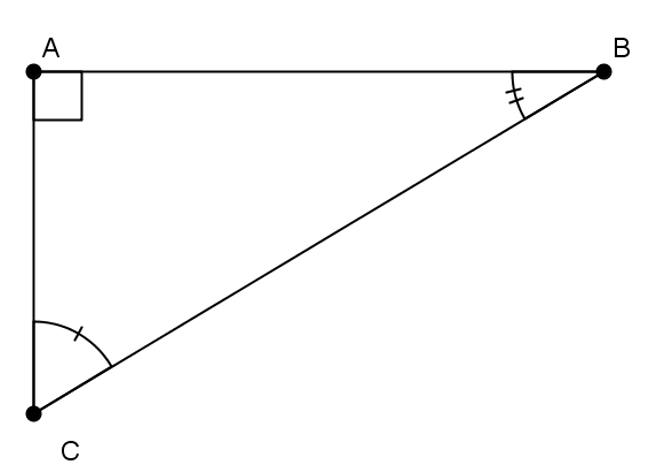
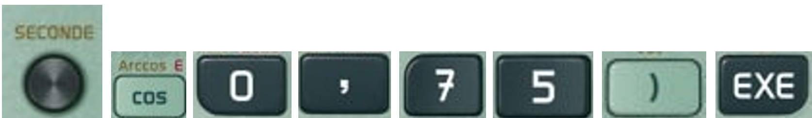
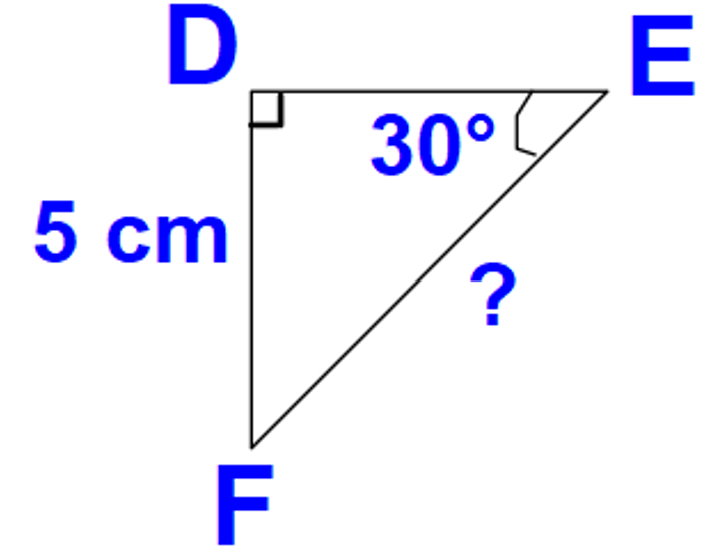
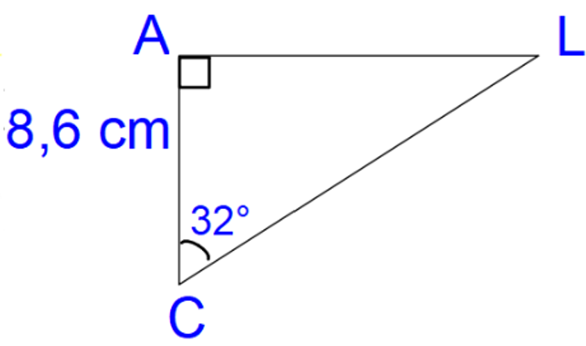
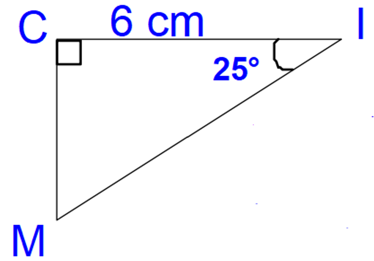
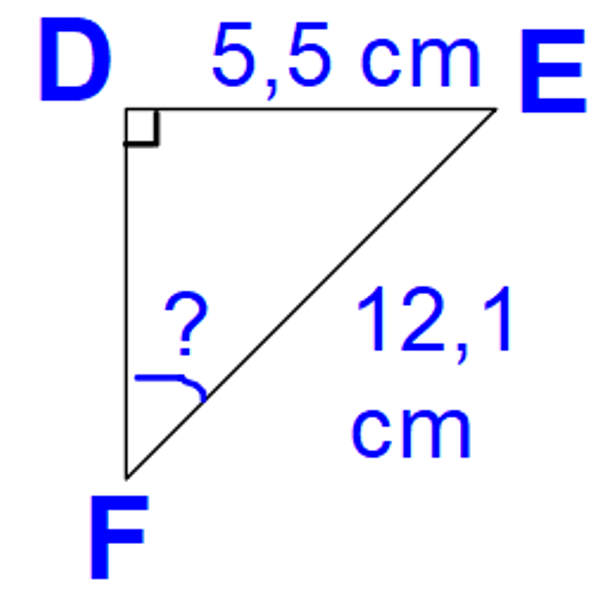
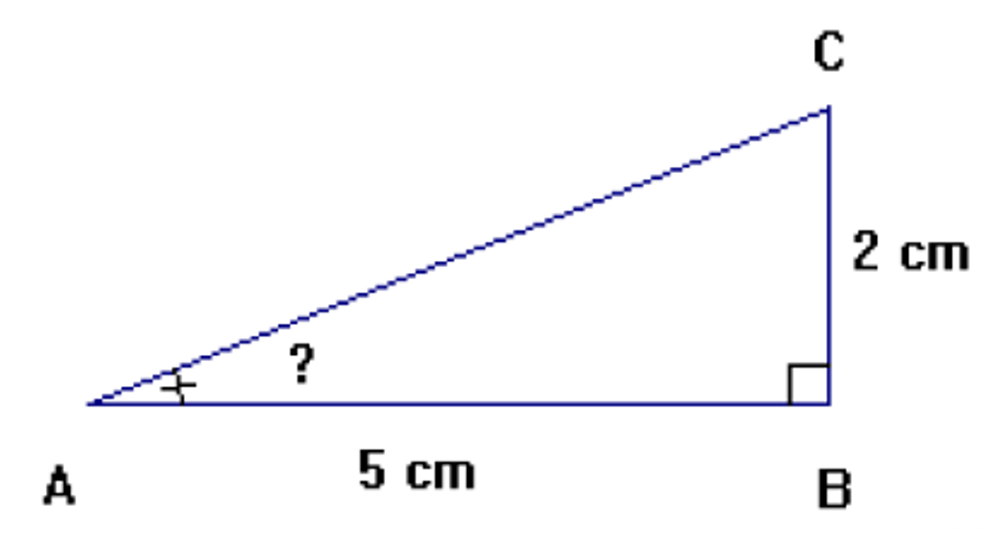
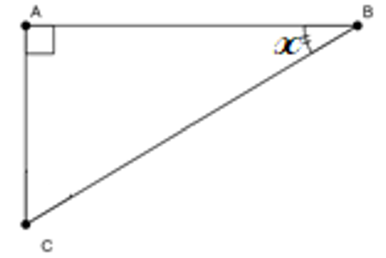

Trigonométrie dans un triangle rectangle
Trois formules
Triangle rectangle et vocabulaire
Définitions : Soit ABC un triangle rectangle en A

[BC] est l'hypoténuse du triangle ABC
[AB] est le côté opposé à l'angle C et le côté adjacent à l'angle B.
[AC] est le côté opposé à l'angle B et le côté adjacent à l'angle C.
Cosinus, sinus et tangente d'un angle aigu
Définitions : ABC étant un triangle rectangle en A, on appelle cosinus de l'angle B, noté Cos B le nombre :
Cos B = longueur du côté adjacent à l'angle BLongueur de l'hypoténuse = ABBC
Définition : ABC étant un triangle rectangle en A, on appelle sinus de l'angle B, noté Sin B le nombre :
Sin B = longueur du côté opposé à l'angle BLongueur de l'hypoténuse = ACBC
Définition : ABC étant un triangle rectangle en A, on appelle Tangente de l'angle B, noté Tan B le nombre :
Tan B = longueur du côté opposé à l'angle Blongueur du côté adjacent à l'angle B = ACAB
Remarque : Le cosinus et le sinus d'un angle aigu sont toujours compris strictement entre 0 et 1.
Utilisation de la calculatrice
Vérifier que la calculatrice est en mode degrés.
Calculer la valeur d'un cosinus lorsque l'on connait la valeur de l'angle
Pour calculer Cos 30°, je dois taper sur la calculatrice :
Avec la Casio :
Avec la TI :
Ainsi Cos 30° = 32 ≈ 0,87
Calculer la valeur d'un angle connaissant le cosinus
Pour calculer la mesure de l'angle ABC tel que Cos ABC = 0,75 , je dois taper à la calculatrice :
Avec la Casio : 
Avec la TI :
Ainsi ABC ≈ 41,4°
Remarque : l'utilisation de la calculatrice est la même pour le sinus et la tangente.
Calcul de longueur dans un triangle rectangle
Enoncé 1 : DEF est un triangle rectangle en D tel que DEF = 30° et DF=5cm. Calculer EF.
Il faut toujours faire une figure.
Rédaction :

Le triangle DEF est rectangle en D, on a :
sin(DEF) = DFFE
sin(30°) = 5FE
FE = 5sin(30°)
FE = 10
Le segment [FE] mesure 10 cm.
Enoncé 2 : ALC est un triangle rectangle en A tel que ACL = 32° et AC=8,6 cm. Calculer AL.
Rédaction :

Le triangle ALC est rectangle en A, on a :
tan(ACL) = ALAC
tan(32°) = AL8,6
AL = 8,6 × tan(32°)
AL ≈ 5,37
Le segment [AL] mesure environ 5,37 cm.
Enoncé 3 : Soit MIC un triangle rectangle en C tel que MIC = 25° et CI=6 cm. Calculer IM.
Rédaction :

Le triangle MIC est rectangle en C, on a :
cos(CIM) = CIMI
cos(25°) = 6MI
MI = 6cos(25°)
MI ≈ 6,62
Le segment [MI] mesure environ 6,62 cm.
Calcul d'angles dans un triangle rectangle
Enoncé 1 :
DEF est un triangle rectangle en D tel que FE=12,1 cm et DE=5,5 cm. Calculer DFE.
Rédaction :

Dans le triangle AEF rectangle en D, on a :
sin(DFE) = DEFE
sin(DFE) = 5,512,1
A la calculatrice on trouve DFE ≈ 27,04°
Enoncé 2 : ABC est un triangle rectangle en B tel que AB=5 cm et BC=2 cm. Calculer BAC
Rédaction :

Dans le triangle ACB rectangle en B, on a :
tan(BAC) = CBAB
tan(BAC) = 25
A la calculatrice on trouve BAC ≈ 21,8°
Relations trigonométriques
Propriété : x désignant un angle aigu quelconque on a :
cos²x + sin²x = 1 et tan x = Sin xCos x
Démonstration :
Soit ABC un triangle rectangle en A et x l'angle ABC.

cos²x + sin²x = (ABBC)² + (ACBC)²
= AB²BC² + AC²BC²
= AB² + AC²BC²
Or, d'après le théorème de Pythagore, AB² + AC² = BC²
donc AB² + AC²BC² = 1
Sin xCos x = ACBCABBC
= ACBC × BCAB
= ACAB
= tan(x)
Exemple : On sait que cos 60° = 12. Déterminer la valeur exacte de sin 60° et tan 60°.
On a :
cos² 60° + sin² 60° = 1 donc 12² + sin² 60° = 1 ainsi 14 + sin² 60° = 1
d'où sin² 60° = 1 − 14 = 44 − 14 = 34
ainsi sin 60° = 34 = 32 ou sin 60° = −34 = −32
Or le sinus d'un angle aigu est compris entre 0 et 1 donc sin 60° = 32.
Et tan(60°) = sin(60°)cos(60°) = 3212 = 32 × 21 = 3